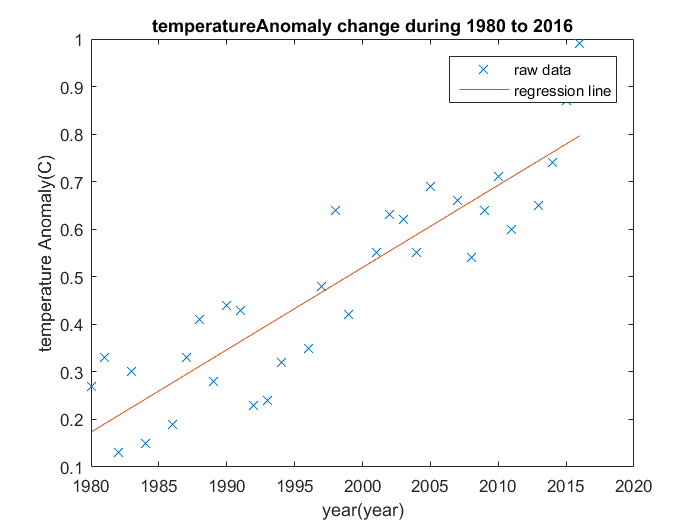

Contents
%%%%%%%%%%%%%%%%%%%%%%%%%%%%%%%%%%%%%%%%%%%%%%%%%%%%%%%%%%%%%%%%%%%%%% % ENGR 132 % Program Description % Allows a user to predict temperature anomaly when given year. % The scrpt loads data, constructs the model, displays the % regression information in text and in a plot % % % Assigment Information % Assignment: PS 04, Problem 2 % Author: Yuefan Fu, fu194@purdue.edu % Team ID: 001-05 % Contributor: Name, login@purdue [repeat for each] %%%%%%%%%%%%%%%%%%%%%%%%%%%%%%%%%%%%%%%%%%%%%%%%%%%%%%%%%%%%%%%%%%%%%%
__________________
INITIALIZATION
%import all the data needed from txt file allData=importdata('Data_global_temp_anomalies.txt','\t'); year=allData.data(:,1); temperatureAnomaly=allData.data(:,2);
__________________
CALCULATIONS
%calculate the coefficient a,b for y=a*x+b result=polyfit(year,temperatureAnomaly,1); %calculate SSE and SST SST=sum((temperatureAnomaly-mean(temperatureAnomaly)).^2); SSE=sum((temperatureAnomaly-result(1)*year-result(2)).^2); %calculate R^2 rSquare=1-SSE/SST;
__________________
FORMATTED TEXT & FIGURE DISPLAYS
fprintf('The equation is temperatureAnomal = %.4f year %.4f.\n',result); fprintf('SST %.4f\nSSE = %.4f\nR^2= %.4f\n',SST,SSE,rSquare); %plot raw data; plot(year,temperatureAnomaly,'x'); hold on; %plot regression line plot(year,year*result(1)+result(2)); legend('raw data','regression line') xlabel('year(year)'); ylabel('temperature Anomaly(C)'); title('temperatureAnomaly change during 1980 to 2016');
The equation is temperatureAnomal = 0.0173 year -34.0936. SST 1.4114 SSE = 0.2810 R^2= 0.8009
__________________
ANALYSIS
-- Q1
The excel and matlab use the same method to get a best fit linear regresion so they have the same result.
__________________
ACADEMIC INTEGRITY STATEMENT
I/We have not used source code obtained from any other unauthorized source, either modified or unmodified. Neither have I/we provided access to my/our code to another. The project I/we am/are submitting is my/our own original work.